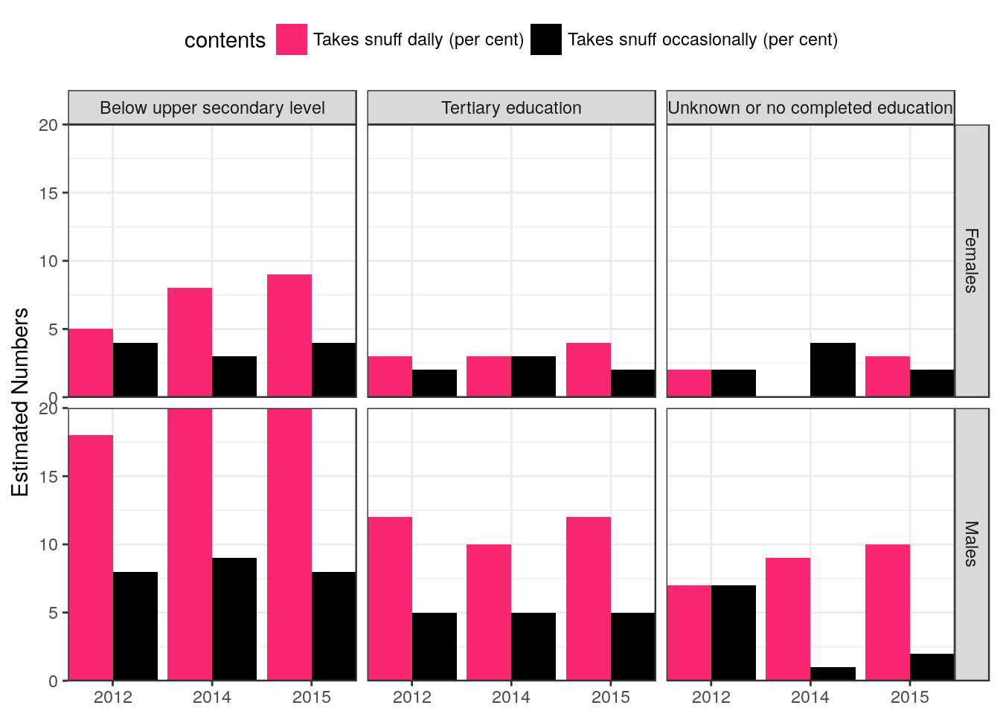

baseURL <- "http://data.ssb.no/api/v0"
## flow <- "OrgsatEksUlonn"
## req_uri <- as.character(ssb_tables$Statistic[ssb_tables$ID==flow])[1]
## flow <- "SnusUtdKj"
req_uri <- "http://data.ssb.no/api/v0/en/table/he/he03/royk/SnusUtdKj"
## req_uri <- file.path(baseURL, path, flow)
bottom_node <- pxweb::get_pxweb_metadata(req_uri)
dims <- pxweb::get_pxweb_dims(bottom_node)
## dims_list <- as.list(rep("*", length(names(dims))))
## names(dims_list) <- names(dims)
dims_list <- lapply(dims, function(x) sample(x$values, min(3, length(x$values))))
pxweb_data <- # retrieve data
pxweb::get_pxweb_data(
url = req_uri,
dims = dims_list,
clean = TRUE)
knitr::kable(pxweb_data[1:10,])| sex | level of education | year | contents | values |
|---|---|---|---|---|
| Both sexes | Total | 2010 | Takes snuff daily (per cent) | 7 |
| Both sexes | Total | 2011 | Takes snuff daily (per cent) | 8 |
| Both sexes | Total | 2013 | Takes snuff daily (per cent) | 9 |
| Both sexes | Total | 2010 | Takes snuff occasionally (per cent) | 4 |
| Both sexes | Total | 2011 | Takes snuff occasionally (per cent) | 5 |
| Both sexes | Total | 2013 | Takes snuff occasionally (per cent) | 4 |
| Both sexes | Below upper secondary level | 2010 | Takes snuff daily (per cent) | 10 |
| Both sexes | Below upper secondary level | 2011 | Takes snuff daily (per cent) | 11 |
| Both sexes | Below upper secondary level | 2013 | Takes snuff daily (per cent) | 13 |
| Both sexes | Below upper secondary level | 2010 | Takes snuff occasionally (per cent) | 5 |
library(ggplot2)
## unique(pxweb_data$`type of activity`)
## unique(pxweb_data$`level of education`)
## dput(unique(pxweb_data$`how often during the last 12 months`))
## str(pxweb_data)
data_plot <- pxweb_data
## data_plot$`how often during the last 12 months` <-
## factor(data_plot$`how often during the last 12 months`,
## levels = c(
## "not at all",
## "a few times during the last three months or less often",
## "every day (by and large)"
## ))
p <-
data_plot %>%
filter(!(sex %in% c("Both sexes"))) %>%
## filter(!(`level of education` %in% c("total"))) %>%
## filter(observations %in% c("Estimated numbers in thousands")) %>%
ggplot(aes(x = year, y = values, fill = contents)) +
## geom_point() +
geom_bar(position = "dodge", stat = "identity") +
## facet_grid(`level of education` ~ `sex`) +
facet_grid(sex ~ `level of education`) +
scale_fill_manual(values = c("#F92672", "black")) +
scale_x_discrete(name = NULL, expand = c(0,0)) +
scale_y_continuous(name = "Estimated Numbers", expand = c(0,0)) +
theme_bw() +
theme(legend.position = "top")
p